[ZONE]
Quai de déchargement Nord.
CitéVision
De la caméra à la preuve actionnable. La vidéosurveillance qui ne se contente pas d’enregistrer : elle détecte, décide et prouve — sur les terrains nationaux, industriels et urbains.
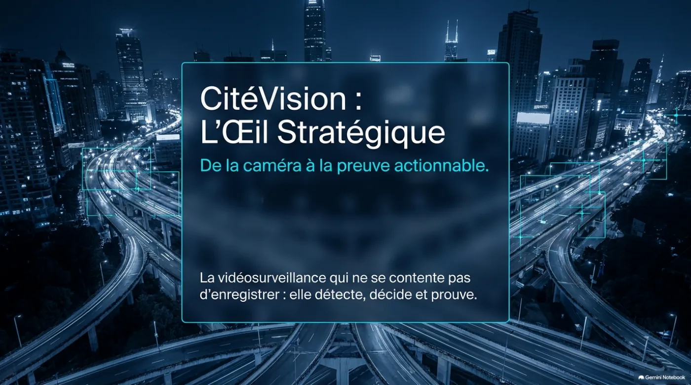
Pourquoi CitéVision
Deux modèles de surveillance — même scène de nuit. Seul l’un produit une décision et une preuve.
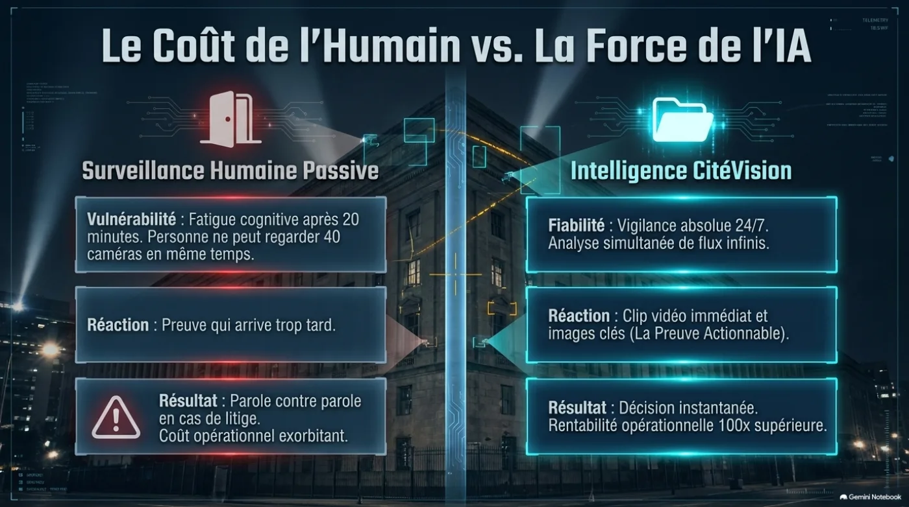
Cas 01
De la zone surveillée à la preuve actionnable — même chaîne métier CitéVision.
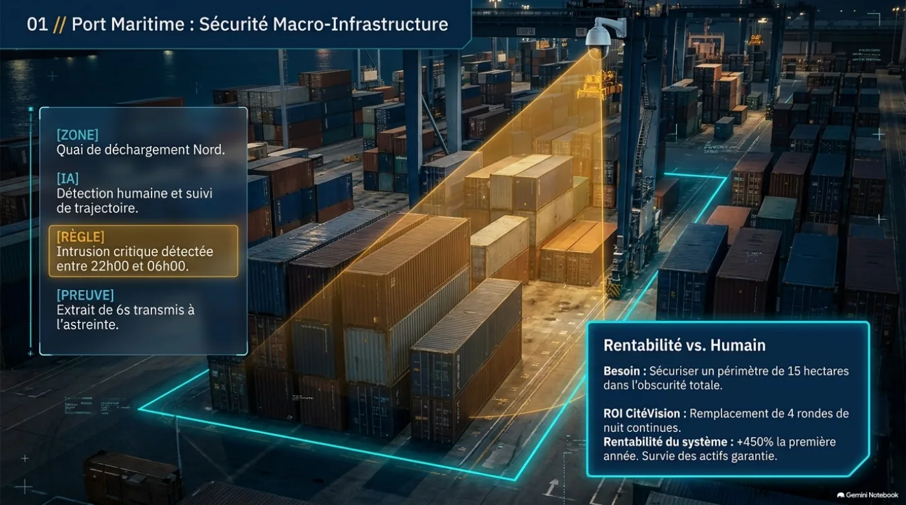
Quai de déchargement Nord.
Détection humaine et suivi de trajectoire.
Intrusion critique détectée entre 22h00 et 06h00.
Extrait de 6s transmis à l’astreinte.
Besoin — Sécuriser un périmètre de 15 hectares dans l’obscurité totale.
ROI CitéVision — Remplacement de 4 rondes de nuit continues. Rentabilité du système : +450% la première année.
Cas 02
De la zone surveillée à la preuve actionnable — même chaîne métier CitéVision.
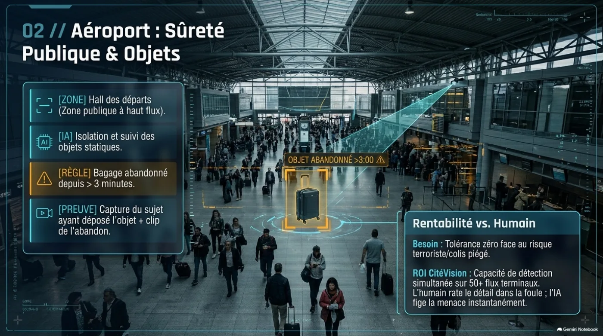
Hall des départs (zone publique à haut flux).
Isolation et suivi des objets statiques.
Bagage abandonné depuis > 3 minutes.
Capture du sujet ayant déposé l’objet + clip de l’abandon.
Besoin — Tolérance zéro face au risque terroriste / colis piégé.
ROI CitéVision — Détection simultanée sur 50+ flux terminaux. L’humain rate le détail dans la foule ; l’IA fige la menace instantanément.
Cas 03
De la zone surveillée à la preuve actionnable — même chaîne métier CitéVision.
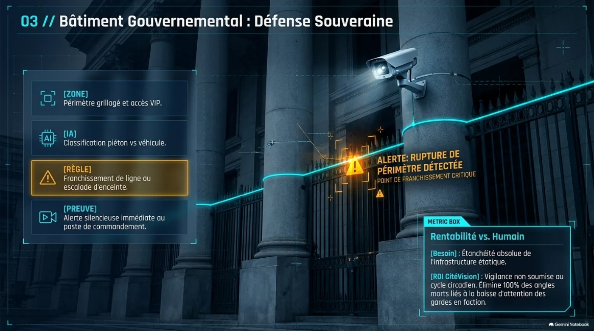
Périmètre grillagé et accès VIP.
Classification piéton vs véhicule.
Franchissement de ligne ou escalade d’enceinte.
Alerte silencieuse immédiate au poste de commandement.
Besoin — Étanchéité absolue de l’infrastructure étatique.
ROI CitéVision — Vigilance non soumise au cycle circadien. Élimine les angles morts liés à la baisse d’attention des gardes en faction.
Cas 04
De la zone surveillée à la preuve actionnable — même chaîne métier CitéVision.
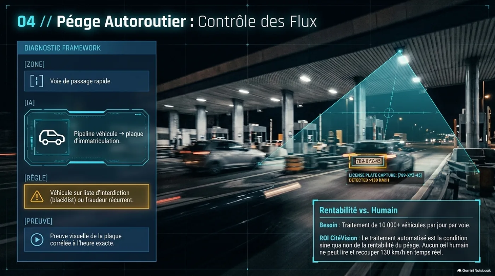
Voie de passage rapide.
Pipeline véhicule → plaque d’immatriculation.
Véhicule sur liste d’interdiction (blacklist) ou fraudeur récurrent.
Preuve visuelle de la plaque corrélée à l’heure exacte.
Besoin — Traitement de 10 000+ véhicules par jour par voie.
ROI CitéVision — Le traitement automatisé est la condition de rentabilité du péage. Aucun œil humain ne peut lire et recouper à 130 km/h en temps réel.
Cas 05
De la zone surveillée à la preuve actionnable — même chaîne métier CitéVision.
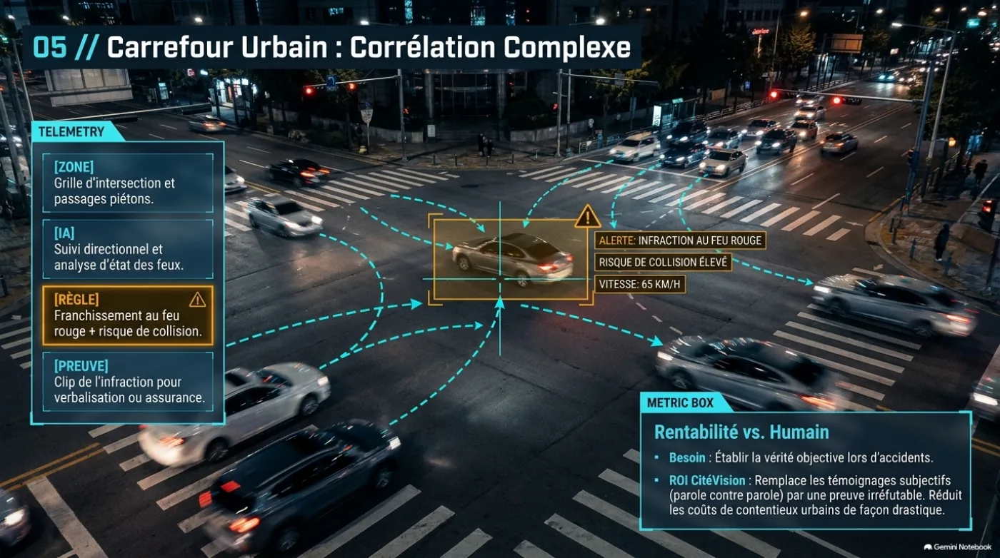
Grille d’intersection et passages piétons.
Suivi directionnel et analyse d’état des feux.
Franchissement au feu rouge + risque de collision.
Clip de l’infraction pour verbalisation ou assurance.
Besoin — Établir la vérité objective lors d’accidents.
ROI CitéVision — Remplace les témoignages subjectifs par une preuve irréfutable. Réduit drastiquement les coûts de contentieux urbains.
Cas 06
De la zone surveillée à la preuve actionnable — même chaîne métier CitéVision.
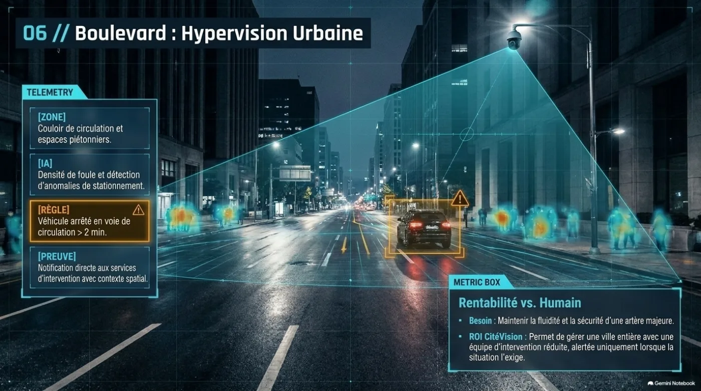
Couloir de circulation et espaces piétonniers.
Densité de foule et détection d’anomalies de stationnement.
Véhicule arrêté en voie de circulation > 2 min.
Notification directe aux services d’intervention avec contexte spatial.
Besoin — Maintenir la fluidité et la sécurité d’une artère majeure.
ROI CitéVision — Gérer une ville entière avec une équipe d’intervention réduite, alertée uniquement lorsque la situation l’exige.
Cas 07
De la zone surveillée à la preuve actionnable — même chaîne métier CitéVision.
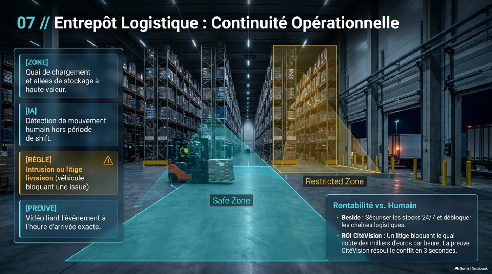
Quai de chargement et allées de stockage à haute valeur.
Détection de mouvement humain hors période de shift.
Intrusion ou litige livraison (véhicule bloquant une issue).
Vidéo liant l’événement à l’heure d’arrivée exacte.
Besoin — Sécuriser les stocks 24/7 et débloquer les chaînes logistiques.
ROI CitéVision — Un litige bloquant le quai coûte des milliers d’euros par heure. La preuve CitéVision résout le conflit en quelques secondes.
Cas 08
De la zone surveillée à la preuve actionnable — même chaîne métier CitéVision.
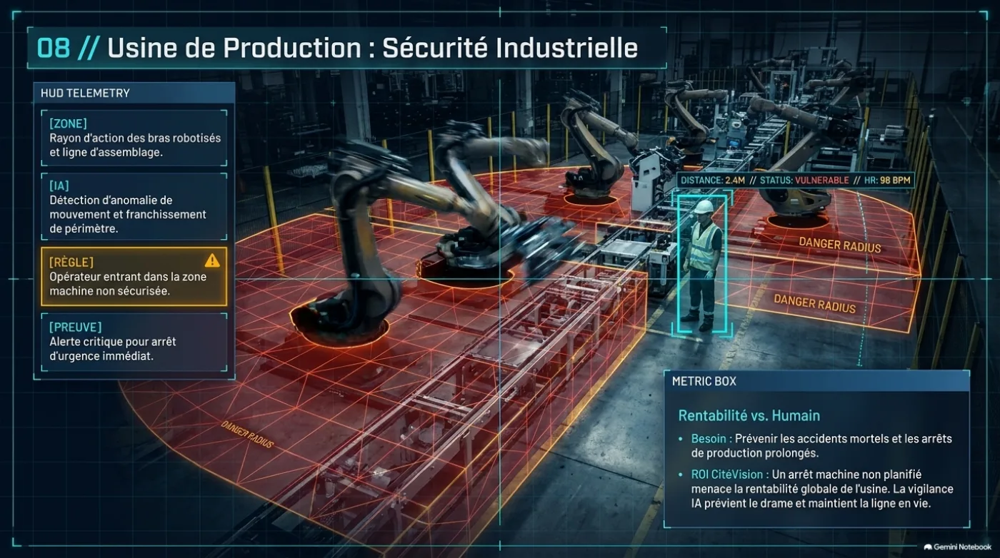
Rayon d’action des bras robotisés et ligne d’assemblage.
Détection d’anomalie de mouvement et franchissement de périmètre.
Opérateur entrant dans la zone machine non sécurisée.
Alerte critique pour arrêt d’urgence immédiat.
Besoin — Prévenir les accidents mortels et les arrêts de production prolongés.
ROI CitéVision — Un arrêt machine non planifié menace la rentabilité. La vigilance IA prévient le drame et maintient la ligne en vie.
Cas 09
De la zone surveillée à la preuve actionnable — même chaîne métier CitéVision.
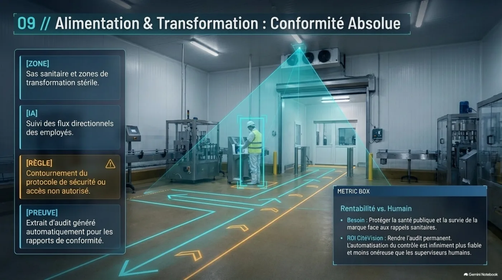
Sas sanitaire et zones de transformation stérile.
Suivi des flux directionnels des employés.
Contournement du protocole de sécurité ou accès non autorisé.
Extrait d’audit généré automatiquement pour les rapports de conformité.
Besoin — Protéger la santé publique et la survie de la marque face aux rappels sanitaires.
ROI CitéVision — Rendre l’audit permanent. L’automatisation du contrôle est plus fiable et moins onéreuse que les superviseurs humains.
Cas 10
De la zone surveillée à la preuve actionnable — même chaîne métier CitéVision.
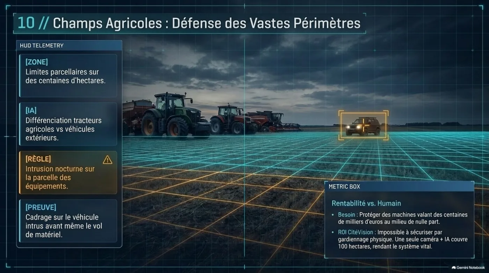
Limites parcellaires sur des centaines d’hectares.
Différenciation tracteurs agricoles vs véhicules extérieurs.
Intrusion nocturne sur la parcelle des équipements.
Cadrage sur le véhicule intrus avant même le vol de matériel.
Besoin — Protéger des machines valant des centaines de milliers d’euros au milieu de nulle part.
ROI CitéVision — Impossible à sécuriser par gardiennage physique. Une caméra + IA couvre ~100 hectares.
Catalogue métier
Une plateforme, toutes les réalités — nationale, entreprise, domestique.
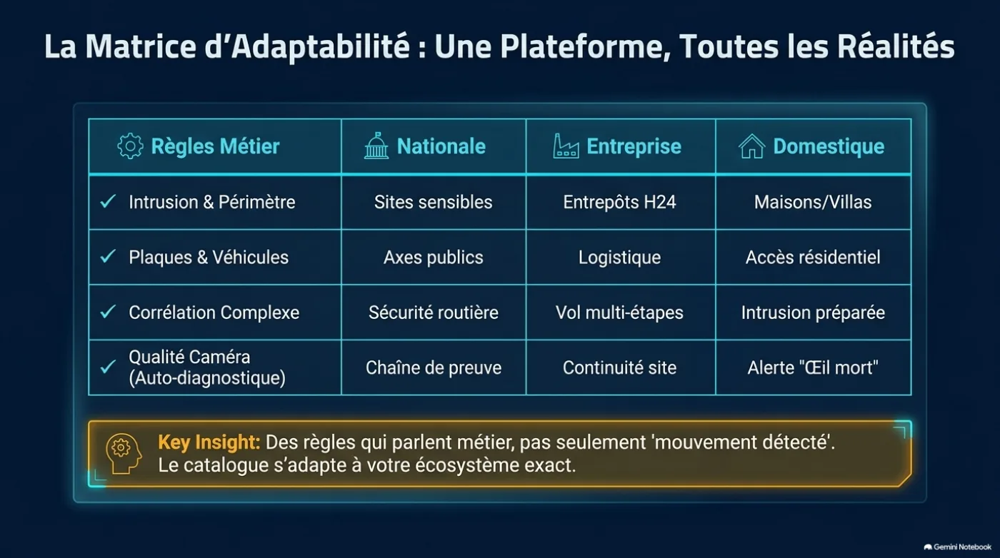
| Règles métier | Nationale | Entreprise | Domestique |
|---|---|---|---|
| Intrusion & périmètre | Sites sensibles | Entrepôts H24 | Maisons / villas |
| Plaques & véhicules | Axes publics | Logistique | Accès résidentiel |
| Corrélation complexe | Sécurité routière | Vol multi-étapes | Intrusion préparée |
| Qualité caméra (auto-diagnostic) | Chaîne de preuve | Continuité site | Alerte « Œil mort » |
Key insight — Des règles qui parlent métier, pas seulement « mouvement détecté ». Le catalogue s’adapte à votre écosystème exact.
Fondations
Caméra → nœud IA → messagerie & alertes / analytics — conçue pour tenir et s’intégrer.
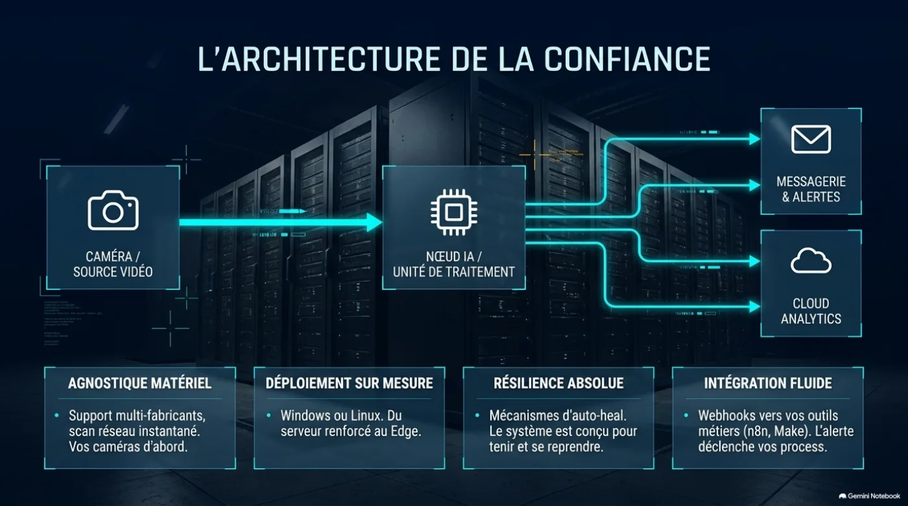
Support multi-fabricants, scan réseau instantané. Vos caméras d’abord.
Windows ou Linux. Du serveur renforcé au Edge.
Mécanismes d’auto-heal. Le système est conçu pour tenir et se reprendre.
Webhooks vers vos outils métiers (n8n, Make). L’alerte déclenche vos process.
Prochaine étape
Remplacez le doute par la preuve — sur votre cas métier, avec vos caméras.
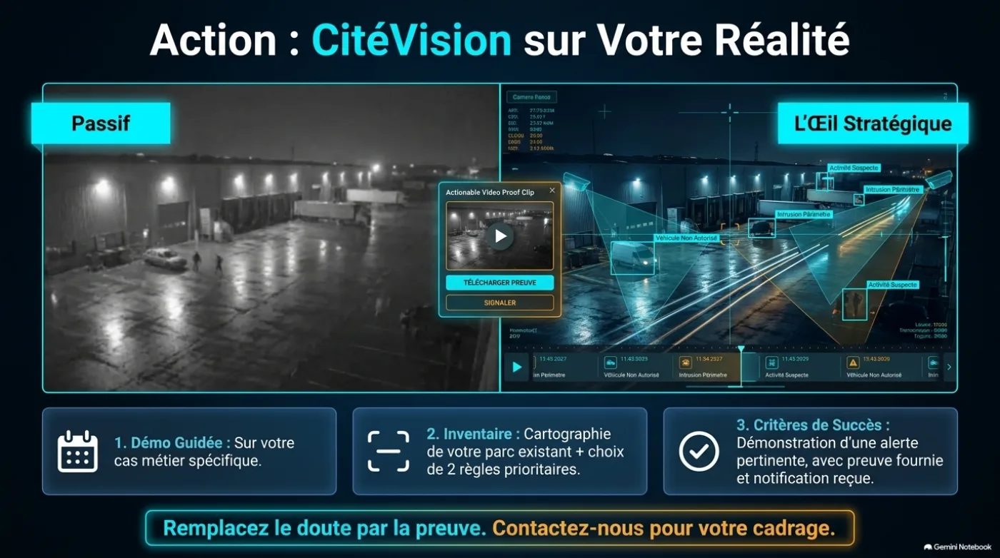
Sur votre cas métier spécifique.
Cartographie de votre parc existant + choix de 2 règles prioritaires.
Alerte pertinente, preuve fournie, notification reçue.
Remplacez le doute par la preuve. Contactez-nous pour votre cadrage.